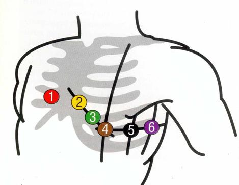

| Extremitätenableitung - 4 poliges Kabel | Brustwandableitung - 6 poliges Kabel |
| rot (I):rechte obere Extremität | rot (V1):4. ICR, rechts, an der Grenze zum Brustbein |
| gelb (II):linke obere Extremität | gelb (V2):gegenüber, links an der Grenze zum Brustbein |
| grün (III):linke untere Extremität | grün (V3):zwischen V2 und V4 |
| schwarz: rechte untere Extremität | braun (V4):5. ICR in der Medioclavicularlinie |
| schwarz (V5):vordere Axillarlinie auf gleicher Höhe | |
| violett (V6):mittlere Axillarlinie auf gleicher Höhe |
Das auf dem Wagen befindliche Spray ist auf die Haut aufzutragen. Der Sog am Gerät so hoch wie nötig einzustellen.
Halten die Saugelektroden nicht auf dem Körper des Patienten sollten die gelben Papierfilter ausgewechselt werden.
Zum Ausschluss eines Hinterwandinfarktes werden in
seltenen Fällen die Ableitungen V7, V8 und V9 erfasst und
die bipolare Ableitung nach Nehb angeordnet.
Für die Ableitung nach Nehb positioniert man die Elektroden
wie folgt:
V1 wird vom 4. ICR auf den 2. ICR nach oben versetzt
V2 positioniert man auf der hinteren Axillarlinie
V3 wird auf dem 5. ICR in der Medioclavicularlinie fixiert
Die übrigen Brustwandableitungen sind zu entfernen.